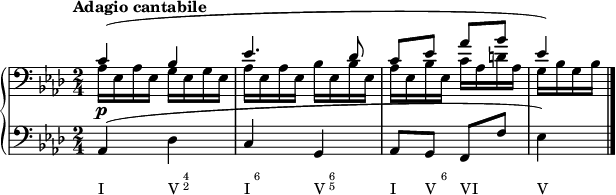

Pedgagogy Class
Table of Contents
Why do we have inversions?
Smooth out the bass line, interplay with upper voices
Inversions are often more on the embellishing chord side of the spectrum
Review V^7
\version "2.24.3" \header{ tagline = "" } \paper{ indent = 0 } #(ly:set-option 'use-paper-size-for-page #f) #(ly:set-option 'tall-page-formats 'png) \new Score { << \new PianoStaff { << \new Staff{ \relative c' { <d f>1 <c e>1} } \new Staff{ \clef bass \relative c' { <g b>1 <c, c'>1 } } >> } \new Staff \with { \remove "Staff_symbol_engraver" \remove "Time_signature_engraver" \remove "Clef_engraver" \override VerticalAxisGroup.default-staff-staff-spacing = #'((basic distance . 100)(padding . 0)(minimum-distance . 1)) } { s1^\markup{ \lower #1 "V" \super \column { 7}} s1^\markup {"I"} } >> } \layout { \context { \Score \override StaffGrouper.staffgroup-staff-spacing.basic-distance = #0 \override StaffGrouper.staffgroup-staff-spacing.padding = #0 \override VerticalAxisGroup.staff-staff-spacing.basic-distance = #0 } }
Note the 7th goes down by step (always!), leading tone is raised, and you have a tripled root.
Inversions of the V^7
These are all resolved strictly
V65
Major Key
\version "2.24.3" \header{ tagline = "" } \paper{ indent = 0 } #(ly:set-option 'use-paper-size-for-page #f) #(ly:set-option 'tall-page-formats 'png) \new Score { << \new PianoStaff { << \new Staff{ \relative c' { <d f>1 <c e>1} } \new Staff{ \clef bass \relative c' { <b, g'>1 <c g'>1 } } >> } \new Staff \with { \remove "Staff_symbol_engraver" \remove "Time_signature_engraver" \remove "Clef_engraver" \override VerticalAxisGroup.default-staff-staff-spacing = #'((basic distance . 100)(padding . 0)(minimum-distance . 1)) } { s1^\markup{ \lower #1 "V" \super \column { 6 \vspace #-0.5 5}} s1^\markup {"I"} } >> } \layout { \context { \Score \override StaffGrouper.staffgroup-staff-spacing.basic-distance = #0 \override StaffGrouper.staffgroup-staff-spacing.padding = #0 \override VerticalAxisGroup.staff-staff-spacing.basic-distance = #0 } }
Note the figured bass, 3 is implied, 5 is also implied, but if 6 is present 5 needs to be there too. Everything resolves as it should. Note that instead of root to root, you have root to fifth and it makes a complete chord.
Minor Key
\version "2.24.3" \header{ tagline = "" } \paper{ indent = 0 } #(ly:set-option 'use-paper-size-for-page #f) #(ly:set-option 'tall-page-formats 'png) \new Score { << \new PianoStaff { << \new Staff{ \key c \minor \relative c' { <d f>1 <c ees>1} } \new Staff{ \key c \minor \clef bass \relative c' { <b, g'>1 <c g'>1 } } >> } \new Staff \with { \remove "Staff_symbol_engraver" \remove "Time_signature_engraver" \remove "Clef_engraver" \override VerticalAxisGroup.default-staff-staff-spacing = #'((basic distance . 100)(padding . 0)(minimum-distance . 1)) } { s1^\markup{ \lower #1 "V" \super \column { 6 \vspace #-0.5 5}} s1^\markup {"i"} } >> } \layout { \context { \Score \override StaffGrouper.staffgroup-staff-spacing.basic-distance = #0 \override StaffGrouper.staffgroup-staff-spacing.padding = #0 \override VerticalAxisGroup.staff-staff-spacing.basic-distance = #0 } }
Note there is no change in figured bass because the accidental is in the bass
V43
Major Key
\version "2.24.3" \header{ tagline = "" } \paper{ indent = 0 } #(ly:set-option 'use-paper-size-for-page #f) #(ly:set-option 'tall-page-formats 'png) \new Score { << \new PianoStaff { << \new Staff{ \relative c' { <f g>1 <e g>1} } \new Staff{ \clef bass \relative c' { <d, b'>1 <c c'>1 } } >> } \new Staff \with { \remove "Staff_symbol_engraver" \remove "Time_signature_engraver" \remove "Clef_engraver" \override VerticalAxisGroup.default-staff-staff-spacing = #'((basic distance . 100)(padding . 0)(minimum-distance . 1)) } { s1^\markup{ \lower #1 "V" \super \column { 4 \vspace #-0.5 3}} s1^\markup {"I"} } >> } \layout { \context { \Score \override StaffGrouper.staffgroup-staff-spacing.basic-distance = #0 \override StaffGrouper.staffgroup-staff-spacing.padding = #0 \override VerticalAxisGroup.staff-staff-spacing.basic-distance = #0 } }
Resolves exactly the same way.
Minor Key
\version "2.24.3" \header{ tagline = "" } \paper{ indent = 0 } #(ly:set-option 'use-paper-size-for-page #f) #(ly:set-option 'tall-page-formats 'png) \new Score { << \new PianoStaff { << \new Staff{ \key c \minor \relative c' { <f g>1 <ees g>1} } \new Staff{ \key c \minor \clef bass \relative c' { <d, b'>1 <c c'>1 } } >> } \new Staff \with { \remove "Staff_symbol_engraver" \remove "Time_signature_engraver" \remove "Clef_engraver" \override VerticalAxisGroup.default-staff-staff-spacing = #'((basic distance . 100)(padding . 0)(minimum-distance . 1)) } { s1^\markup{ \lower #1 "V" \super \column {\slashed-digit #6 \vspace #-0.5 4 \vspace #-0.5 3}} s1^\markup { "i"} } >> } \layout { \context { \Score \override StaffGrouper.staffgroup-staff-spacing.basic-distance = #0 \override StaffGrouper.staffgroup-staff-spacing.padding = #0 \override VerticalAxisGroup.staff-staff-spacing.basic-distance = #0 } }
Draw attention to the fact that you need the 6 because it has an accidental now
V42
Major Key
\version "2.24.3" \header{ tagline = "" } \paper{ indent = 0 } #(ly:set-option 'use-paper-size-for-page #f) #(ly:set-option 'tall-page-formats 'png) \new Score { << \new PianoStaff { << \new Staff{ \relative c' { <g' b>1 <g c>1} } \new Staff{ \clef bass \relative c { <f d'>1 <e c'>1 } } >> } \new Staff \with { \remove "Staff_symbol_engraver" \remove "Time_signature_engraver" \remove "Clef_engraver" \override VerticalAxisGroup.default-staff-staff-spacing = #'((basic distance . 100)(padding . 0)(minimum-distance . 1)) } { s1^\markup{ \lower #1 "V" \super \column { 4 \vspace #-0.5 2}} s1^\markup {\lower #1 "I" \super \column {6}} } >> } \layout { \context { \Score \override StaffGrouper.staffgroup-staff-spacing.basic-distance = #0 \override StaffGrouper.staffgroup-staff-spacing.padding = #0 \override VerticalAxisGroup.staff-staff-spacing.basic-distance = #0 } }
Again, things resolve correctly
Minor Key
\version "2.24.3" \header{ tagline = "" } \paper{ indent = 0 } #(ly:set-option 'use-paper-size-for-page #f) #(ly:set-option 'tall-page-formats 'png) \new Score { << \new PianoStaff { << \new Staff{ \key c \minor \relative c' { <g' b>1 <g c>1} } \new Staff{ \clef bass \relative c { \key c \minor <f d'>1 <ees c'>1 } } >> } \new Staff \with { \remove "Staff_symbol_engraver" \remove "Time_signature_engraver" \remove "Clef_engraver" \override VerticalAxisGroup.default-staff-staff-spacing = #'((basic distance . 100)(padding . 0)(minimum-distance . 1)) } { s1^\markup{ \lower #1 "V" \super \column { \slashed-digit #6 \vspace #-0.5 4 \vspace #-0.5 2}} s1^\markup {\lower #1 "i" \super \column {6}} } >> } \layout { \context { \Score \override StaffGrouper.staffgroup-staff-spacing.basic-distance = #0 \override StaffGrouper.staffgroup-staff-spacing.padding = #0 \override VerticalAxisGroup.staff-staff-spacing.basic-distance = #0 } }
Again, the raised 6 in the figured bass, 4 is necessary as well
Alternate Resolutions
V43 to a I6
\version "2.24.3" \header{ tagline = "" } \paper{ indent = 0 } #(ly:set-option 'use-paper-size-for-page #f) #(ly:set-option 'tall-page-formats 'png) \new Score { << \new PianoStaff { << \new Staff{ \relative c' { <f g>1 <e g>1} } \new Staff{ \clef bass \relative c' { <d, b'>1 <e c'>1 } } >> } \new Staff \with { \remove "Staff_symbol_engraver" \remove "Time_signature_engraver" \remove "Clef_engraver" \override VerticalAxisGroup.default-staff-staff-spacing = #'((basic distance . 100)(padding . 0)(minimum-distance . 1)) } { s1^\markup{ \lower #1 "V" \super \column { 4 \vspace #-0.5 3}} s1^\markup {\lower #1 "I" \super \column {6}} } >> } \layout { \context { \Score \override StaffGrouper.staffgroup-staff-spacing.basic-distance = #0 \override StaffGrouper.staffgroup-staff-spacing.padding = #0 \override VerticalAxisGroup.staff-staff-spacing.basic-distance = #0 } }
You get a doubled third. To avoid this you have to do the next exception.
\version "2.24.3" \header{ tagline = "" } \paper{ indent = 0 } #(ly:set-option 'use-paper-size-for-page #f) #(ly:set-option 'tall-page-formats 'png) \new Score { << \new PianoStaff { << \new Staff{ \relative c' { \set glissandoMap = #'((1 . 1)) <c e>1\glissando <b f'>1\glissando <c g'>1} } \new Staff{ \clef bass \relative c { \set glissandoMap = #'((0 . 0)) <c g'>\glissando <d g>1\glissando <e g>1 } } >> } \new Staff \with { \remove "Staff_symbol_engraver" \remove "Time_signature_engraver" \remove "Clef_engraver" \override VerticalAxisGroup.default-staff-staff-spacing = #'((basic distance . 100)(padding . 0)(minimum-distance . 1)) } { s1^\markup {\lower #1 "I"} s1^\markup{ \lower #1 "V" \super \column { 4 \vspace #-0.5 3}} s1^\markup {\lower #1 "I" \super \column {6}} } >> } \layout { \context { \Score \override StaffGrouper.staffgroup-staff-spacing.basic-distance = #0 \override StaffGrouper.staffgroup-staff-spacing.padding = #0 \override VerticalAxisGroup.staff-staff-spacing.basic-distance = #0 } }
This is the only time you can not resolve the seventh down, because of the parallel 10ths between soprano and bass being more powerful.
V42 Beethoven
There are a couple of exceptions because of Beethoven
\version "2.24.3" \header{ tagline = "" } \paper{ indent = 0 } #(ly:set-option 'use-paper-size-for-page #f) #(ly:set-option 'tall-page-formats 'png) \new Score { << \new PianoStaff { << \new Staff{ \relative c' { <d g>1 <g c>1} } \new Staff{ \clef bass \relative c { <f b>1 <e c'>1 } } >> } \new Staff \with { \remove "Staff_symbol_engraver" \remove "Time_signature_engraver" \remove "Clef_engraver" \override VerticalAxisGroup.default-staff-staff-spacing = #'((basic distance . 100)(padding . 0)(minimum-distance . 1)) } { s1^\markup{ \lower #1 "V" \super \column { 4 \vspace #-0.5 2}} s1^\markup {\lower #1 "I" \super \column {6}} } >> } \layout { \context { \Score \override StaffGrouper.staffgroup-staff-spacing.basic-distance = #0 \override StaffGrouper.staffgroup-staff-spacing.padding = #0 \override VerticalAxisGroup.staff-staff-spacing.basic-distance = #0 } }
This is only if scale degree 5 is in the soprano, and jumps up to scale degree 8, scale degree 2 will also have to jump up to 5
\version "2.24.3" \header{ tagline = "" } \paper{ indent = 0 } #(ly:set-option 'use-paper-size-for-page #f) #(ly:set-option 'tall-page-formats 'png) \new Score { << \new PianoStaff { << \new Staff{ \relative c' { <g' d'>1 <g g'>1} } \new Staff{ \clef bass \relative c { <f b>1 <e c'>1 } } >> } \new Staff \with { \remove "Staff_symbol_engraver" \remove "Time_signature_engraver" \remove "Clef_engraver" \override VerticalAxisGroup.default-staff-staff-spacing = #'((basic distance . 100)(padding . 0)(minimum-distance . 1)) } { s1^\markup{ \lower #1 "V" \super \column { 4 \vspace #-0.5 2}} s1^\markup {\lower #1 "I" \super \column {6}} } >> } \layout { \context { \Score \override StaffGrouper.staffgroup-staff-spacing.basic-distance = #0 \override StaffGrouper.staffgroup-staff-spacing.padding = #0 \override VerticalAxisGroup.staff-staff-spacing.basic-distance = #0 } }
Only if scale degree 2 is in the soprano, and jumps to scale degree 5.
A great example of this from Sonata no. 8, op. 13 "Pathetique" II. Adagio Cantabile
\version "2.24.3" \header{ tagline = "" } \paper{ indent = 0 } #(ly:set-option 'use-paper-size-for-page #f) #(ly:set-option 'tall-page-formats 'png) \new Score { << \new PianoStaff { << \new Staff{ \key aes \major \time 2/4 \tempo "Adagio cantabile" \relative c' { << {\clef bass c4( bes | ees4. des8 | c ees aes bes | ees,4) \bar "|." } \\ {aes,16\p ees aes ees g ees g ees | aes ees aes ees bes' ees, bes' ees, aes ees bes' ees, c' aes d aes | g bes g bes } >> } } \new Staff{ \clef bass \time 2/4 \key aes \major \relative c { aes4( des | c g | aes8 g f f' | ees4) Staff \with { \remove "Staff_symbol_engraver" \remove "Time_signature_engraver" \remove "Clef_engraver" \override VerticalAxisGroup.default-staff-staff-spacing = #'((basic distance . 100)(padding . 0)(minimum-distance . 1)) } { s4^\markup{ \lower #1 "I"} s4^\markup{\lower #1 "V" \super \column {4 \vspace #-0.5 2}} s4^\markup{ \lower #1 "I" \super \column {6}} s4^\markup{\lower #1 "V" \super \column {6 \vspace #-0.5 5}} s8^\markup{\lower #1 "I" } s8^\markup{\lower #1 "V" \super \column {6}} s4^\markup{\lower #1 "VI"} s4^\markup{\lower #1 "V"} } >> } \layout { \context { \Score \override StaffGrouper.staffgroup-staff-spacing.basic-distance = #0 \override StaffGrouper.staffgroup-staff-spacing.padding = #0 \override VerticalAxisGroup.staff-staff-spacing.basic-distance = #0 } }
